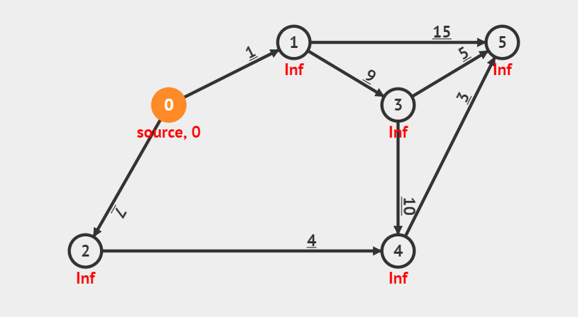

MarkBind is highly-optimized for content reuse. It offers several mechanisms to provide readers with many variations of the content while minimizing duplication at source file level. As a result, instead of creating a one-size-fits-all site, MarkBind can create a site in which readers can chart their own path of reading.
The O(V+E) Dynamic Programming algorithm can solve special case of SSSP problem, i.e. when the input graph is a Directed Acyclic Graph(DAG) thus we can find at least one
tropicologytopological order of the DAG and process the edge relaxation according to this topological order.On the Modified Dijkstra's killer example shown above, DP(0) works fast as the graph is actually a DAG, albeit having negative weight edge. As the graph is a DAG, there will not be any negative weight cycle to worry about.
For more info: https://visualgo.net/en/sssp?slide=10-1
https://visualgo.net/en/sssp?slide=10-1

For more details, click here.